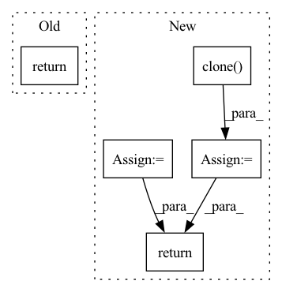

Pattern ID :522
Before Change
attn = attn * mapping_mask
output = torch.bmm(attn, v)
return output, attn
After Change
attn = attn.masked_fill(key_mask == 0., -np.inf)
if attn_prior is not None:
attn = self.log_softmax(attn) + torch.log(attn_prior.transpose(1, 2) + 1e-8)
attn_logprob = attn.unsqueeze(1).clone()
attn = self.softmax(attn)
if query_mask is not None:
attn = attn * query_mask
attn_raw = attn.clone()
if mapping_mask is not None:
attn = attn * mapping_mask
output = torch.bmm(attn, v)
return output, (attn, attn_raw), attn_logprob
In pattern: SUPERPATTERN
Frequency: 3
Non-data size: 5
Instances Fragment ID: 1930894
Project Name: keonlee9420/portaspeech
Commit Name: 814cdda1ebf7dc626708db2bcf20fdb9207f4345
Time: 2022-02-13
Author: keonlee9420@gmail.com
File Name: model/blocks.py
M Class Name: ScaledDotProductAttention
N Class Name: ScaledDotProductAttention
M Method Name: forward(8)
N Method Name: forward(7)
M Parent Class: nn.Module
N Parent Class: nn.Module
M File Name: model/blocks.py
N File Name: model/blocks.py
M Start Line: 615
M End Line: 623
N Start Line: 612
N End Line: 632
Before Change
super().__init__()
def forward(self, x):
return x
// relative positional bias
After Change
if x.ndim == 2:
x = rearrange(x, "b n -> b 1 n")
orig_x = x.clone()
x = self.encoder(x)
x = rearrange(x, "b c n -> b n c")
x, indices, commit_loss = self.rq(x)
x = rearrange(x, "b n c -> b c n")
recon_x = self.decoder(x)
recon_loss = F.mse_loss(orig_x, recon_x)
return recon_loss
// relative positional bias
Fragment ID: 1930921
Project Name: lucidrains/audiolm-pytorch
Commit Name: 3bdca3666a6b5b9d018c80d1111698feb112f078
Time: 2022-10-25
Author: lucidrains@gmail.com
File Name: audiolm_pytorch/audiolm_pytorch.py
M Class Name: SoundStream
N Class Name: SoundStream
M Method Name: forward(2)
N Method Name: forward(2)
M Parent Class: nn.Module
N Parent Class: nn.Module
M File Name: audiolm_pytorch/audiolm_pytorch.py
N File Name: audiolm_pytorch/audiolm_pytorch.py
M Start Line: 22
M End Line: 22
N Start Line: 124
N End Line: 138
Before Change
if self.training:
ord_prob = F.log_softmax(concat_feats, dim=1)
return ord_prob.view(-1, ord_num, H, W)
ord_prob = F.softmax(C, dim=1)[:, 1, ::]
ord_prob = ord_prob.view(-1, ord_num, H, W)After Change
if self.training:
prob = F.log_softmax(concat_feats, dim=1)
ord_prob = x.clone()
ord_prob[:, 0::2, :, :] = prob[:, 0, :, :, :]
ord_prob[:, 1::2, :, :] = prob[:, 1, :, :, :]
return ord_prob
ord_prob = F.softmax(concat_feats, dim=1)[:, 0, ::]
ord_label = torch.sum((ord_prob > 0.5), dim=1).reshape((N, 1, H, W)) Fragment ID: 1930933
Project Name: dontlovebugs/superviseddepthprediction
Commit Name: 07fe1714fc568b25bd80debe8dd3ab800ff576a8
Time: 2020-05-02
Author: wangxin_buaa@163.com
File Name: dp/modules/decoders/OrdinalRegression.py
M Class Name: OrdinalRegressionLayer
N Class Name: OrdinalRegressionLayer
M Method Name: forward(2)
N Method Name: forward(2)
M Parent Class: nn.Module
N Parent Class: nn.Module
M File Name: dp/modules/decoders/OrdinalRegression.py
N File Name: dp/modules/decoders/OrdinalRegression.py
M Start Line: 26
M End Line: 41
N Start Line: 28
N End Line: 45